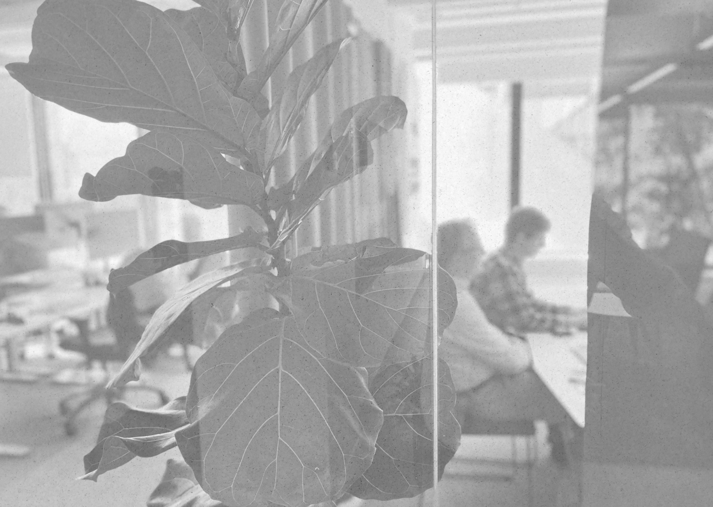
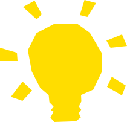
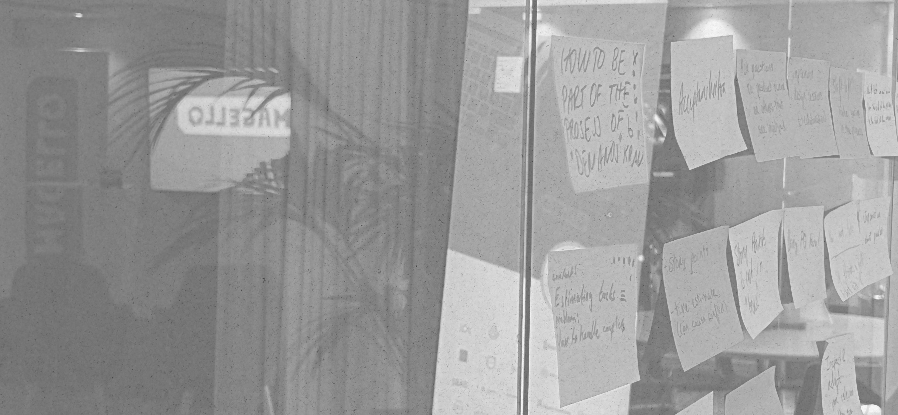
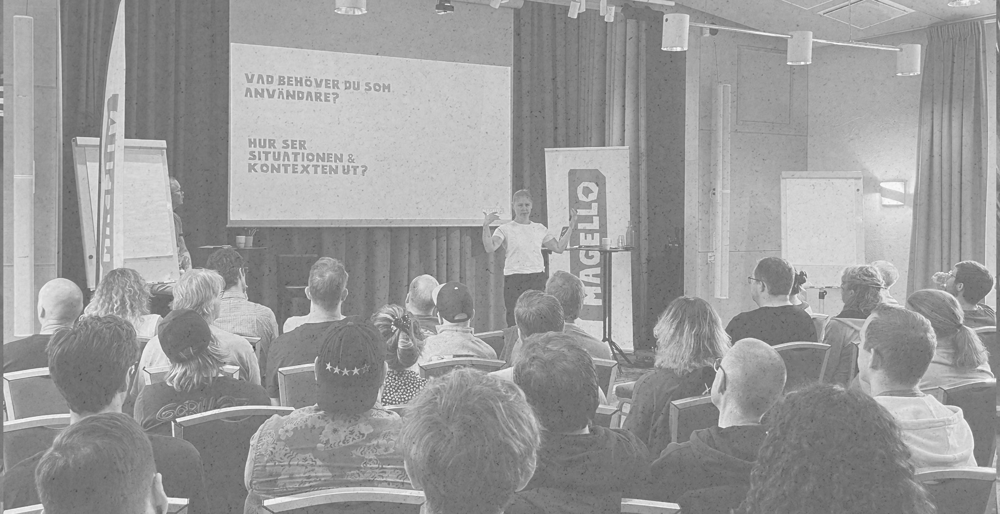

Exempelpresentation
Presentationer som är webbsidor
Samma formspråk som magello.se, öppnas direkt från disk.
Patric Jansson · Oktober 2026
En presentation ska gå att öppna överallt
- En HTML-fil öppnas i alla webbläsare, utan server
- Text, färger och former följer Magellos designsystem och ser ut som webben
- Källan är HTML, så den går att versionshantera och låta AI skriva
Layouter
Byggstenarna du kan kombinera.
Kort med ikoner

Idé
Börja med en tanke per bild. Rubriken säger slutsatsen.
Struktur
Luft, ytor och former delar upp innehållet, aldrig streck.
Leverans
Publicera som statisk sida och dela länken.

Fotot får ta plats
Bilder är alltid svartvita och klipps i en polygon. Texten behåller samma vänsterkant som på alla andra bilder.
Siffror som blickfång
1
länk att dela
0
beroenden eller byggsteg
16:9
skalar till alla skärmar
Allvaret ligger i typografin. Lekfullheten ligger i formerna.

Helbild
Text på foto ligger på en vit platta
Aldrig direkt på bilden.
En form säger ”här börjar något”. En linje säger ”här slutar något”. Magellos formspråk
Så skapar du en ny presentation
- Kopiera
styleguide/presentationer/malltill en ny katalog - Skriv en
sectionper bild - Dubbelklicka på index.html och tryck F för helskärm
<section class="slide">
<span class="kicker">Etikett</span>
<h2>Rubriken är slutsatsen</h2>
<p>En tanke per bild.</p>
<aside class="notes">…</aside>
</section>Bara du ser anteckningarna
- Tryck S så öppnas talarvyn i ett eget fönster
- Dra presentationen till projektorn och tryck F för helskärm
- Bläddra i vilket fönster som helst, de följer varandra
I talarvyn
- Aktuell och nästa bild
- Dina anteckningar
- Tid sedan start och klocka
Tack!
Frågor? patric.jansson@magello.se